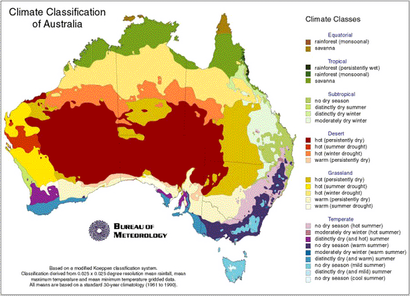

Climatic Design
The purpose of climatic design is to facilitate an increase in the energy efficiency of buildings. Thermal design improves the living and working environment for occupants through ecologically sustainable means. It also seeks to reduce the effect on public health by adverse climatic conditions.
Climatic design issues are now incorporated in Residential planning codes and Building Code of Australia.
Climate Zones
Australia is a large country with three very different different climates -tropical, arid and temperate.
Regional climate zones are particularly significant for the design and construction of buildings.
The map from the Bureau of Meteorology below shows these climate zones with sub groups.

According to the BCA (Volume 2) Figure 1.1.4 Australia is divided into eight (8) climate zones for the purposes of thermal design of a building. Table 1.1.2 list climate zones for cities of other various locations.

Figure 1.1.4
Because buildings are not fully sealed, outside conditions have a significant influence on the climate inside the building. The building's style, the materials used, the state of repair of the building and whether the building is insulated, air-conditioned or without either, all influence the impact outside conditions have on the climate inside the building.
Climate and its importance
Climate change is the greatest environmental threat the world faces today. It is caused by emissions of greenhouse gases such as carbon dioxide. Carbon dioxide (CO2) is a by-product of our use of energy, and therefore by cutting energy consumption we automatically reduce total CO2 emissions.
Buildings designed for climate
Climatic design is practiced throughout the world and has been shown to produce buildings with low energy costs, reduced maintenance, and superior comfort.
Some of the design features are outlined below:
- Utilising climatic factors may not require mechanical heating or cooling.
- Homes that are passively designed take advantage of natural energy flows to maintain thermal comfort. (Well designed envelopes maximise cooling air movement and exclude sun in summer, trap and store heat from the sun in winter and minimise heat loss to the external environment.)
- Building envelope is a term used to describe the roof, walls, windows, floors and internal walls of a home..
- Maximise the thermal comfort and minimise the need for energy reliant heating and cooling appliances to achieve accepted levels of thermal comfort.
There are many Internet site which identify key actions that can be undertaken to save energy. Actions may be divided up into different areas (such as heating, lighting etc.). In Table 1 below you find some links to Internet sites that may be of interest to you.
Table 1| Passive Solar Design | Passive solar design refers to the use of the sun’s energy for the heating and cooling of living spaces. |
| Your Home Design | Australia's Guide to Environmentally Sustainable Homes |
| Climatic design of buildings | "Weather" is the set of atmospheric conditions prevailing at a given place and time. "Climate" can be defined as the integration in time of weather conditions, characteristics of a certain geographical location. |
You may search the web if you want to look for additional information.
If you have any query please contact Karl Boeing